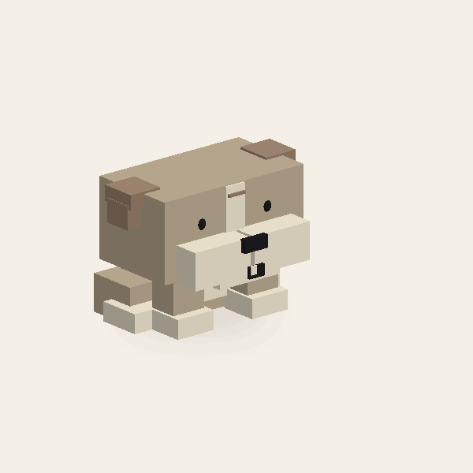
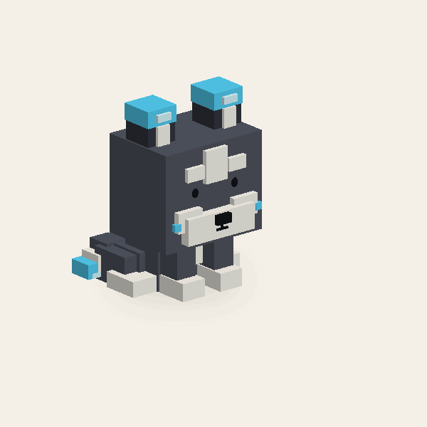
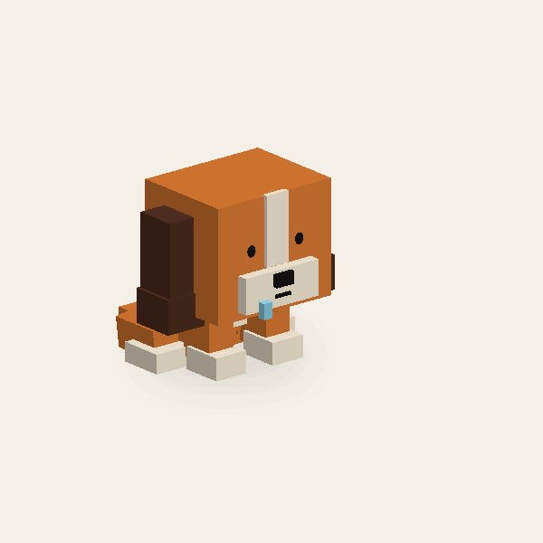
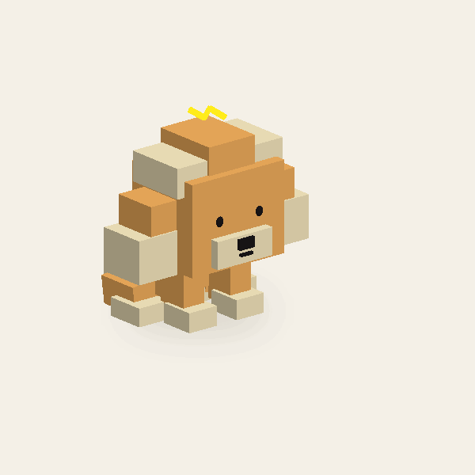
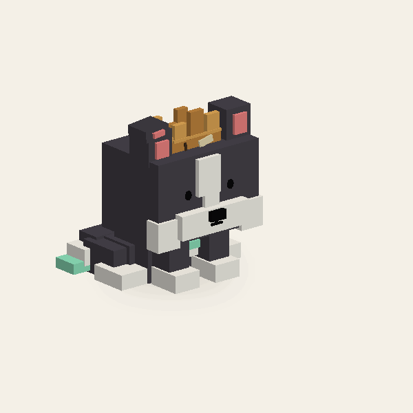
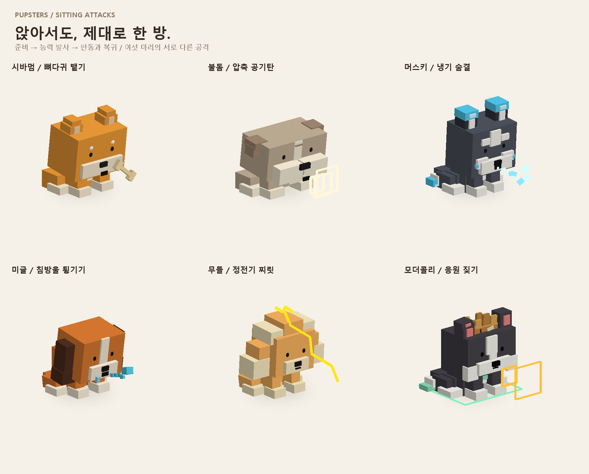

D01 / SITTING ATTACK
시바멈
뼈다귀 뱉기

뼈다귀 뱉기뼈를 문 채 고개를 젖혔다가, 앞으로 까딱하며 퉤! 뼈를 뱉어요.
여섯 강아지의 2초 공격을 실제 파트 지오메트리로 재생합니다.
GIF를 누르면 드래그·속도·프레임 탐색이 가능한 오프라인 3D 뷰어가 열려요.
뼈다귀 뱉기
뼈다귀 뱉기뼈를 문 채 고개를 젖혔다가, 앞으로 까딱하며 퉤! 뼈를 뱉어요.
압축 공기탄

압축 공기탄볼에 공기를 빵빵하게 모은 뒤, 고개 반동과 함께 공기 충격파를 뿜어요.
냉기 숨결

냉기 숨결숨을 들이마시고 고개를 내밀어, 입에서 얼음 알갱이와 냉기를 길게 내뿜어요.
침방울 튕기기

침방울 튕기기침을 모으며 고개를 갸웃하고, 끈적한 침방울을 앞으로 퉤! 튕겨요.
정전기 찌릿

정전기 찌릿몸을 작게 부르르 떨며 충전하고, 머리 중앙 번개에서 전기를 찌리릭 뻗어요.
응원 짖기

응원 짖기고개를 세 번 까딱하며 왕! 왕! 왕! 왕관이 덜렁이고 응원 파동이 퍼져요.

준비 0–0.6초 · 발사 0.6–1.25초 · 회복 1.25–2초
모든 동작은 고정된 파트의 위치·회전·크기를 절차적으로 재생합니다. 뷰어와 파일은 네트워크 연결 없이 열 수 있습니다.
절차식 Anchored Part 모션 · Roblox Studio 가져오기 미검증 · 피해 판정 없음. 캐릭터 공격 연출과 타격 시스템은 별도로 연결해야 합니다.